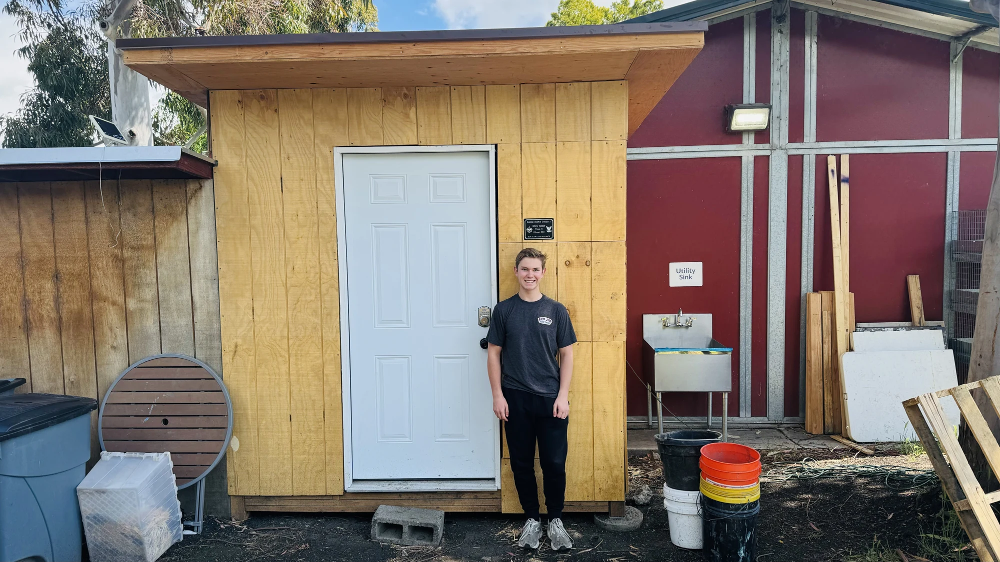

Mechanical engineering / CU Boulder
Andrew Honer
I'm studying mechanical engineering at CU Boulder with a minor in physics. I enjoy CAD, reverse engineering, and hands-on projects, especially mechanical and automotive design.
Selected work
CAD, construction & the process behind them 01
01Reverse engineering · SOLIDWORKS
Nitecore NWL20
I disassembled and measured a Nitecore work light, then modeled its parts and assembly in SOLIDWORKS.

02Construction · Project leadership
Eagle Scout service project
I planned and led a shed and accessible-sink project for Animal Assisted Happiness.
Currently working on
2026 / In progressBackground
About Me
I’ve worked on projects ranging from reverse-engineering a work light in SOLIDWORKS to planning and leading a shed and accessible-sink build. I’m also involved in CU Autonomous Racing, where I’m working on the steering system and master CAD assembly.
More about my background